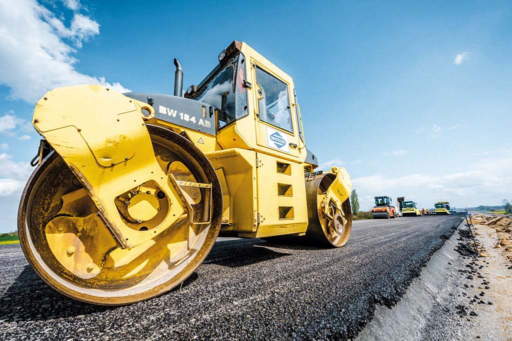
Útépítés
Pere
Pere, útépítés
3853 Pere, Petőfi út hrsz.: 8/1; 55.
Munkáink
Több évtizedes tapasztalatunk alatt megvalósított projektek — útépítéstől a logisztikai csarnokokig.

3853 Pere, Petőfi út hrsz.: 8/1; 55.
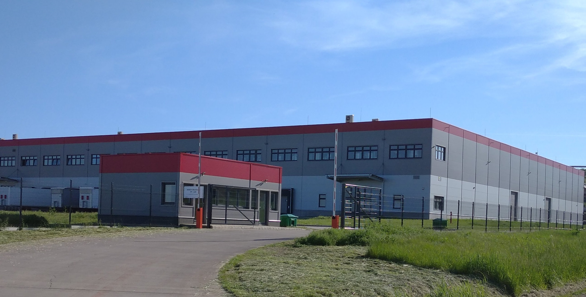
Szirmabesenyő, Kelecsényi út 0117/30. hrsz.
Szirmabesenyő, hrsz.: 0129/114. Tulajdonos: Globál 2000 Üzletház Kft. Bérlő: Trans-Sped Kft.
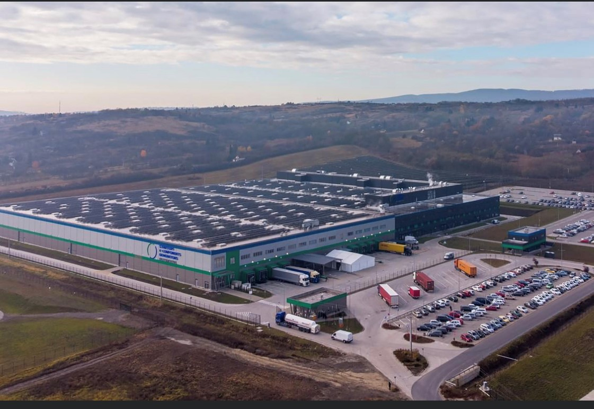
22 000 m² logisztikai raktár; 33 000 m² gyár, labor és irodaterület alapozása és szerkezetépítése.
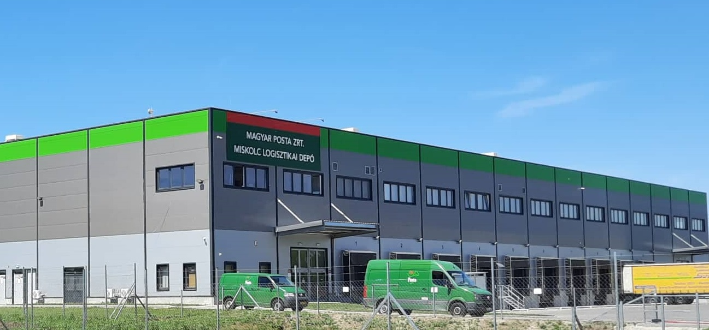
Helyszín: Alsózsolca, hrsz.: 097/31. Tulajdonos: MAIP Kft.
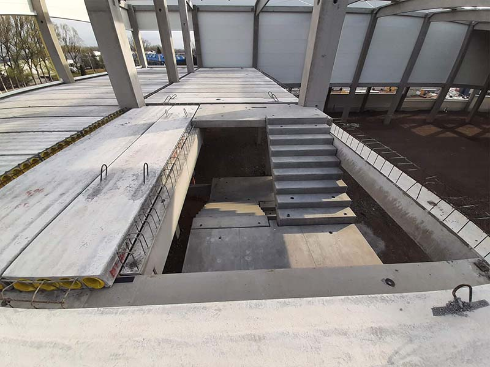
Tulajdonos: Cordys Holding Kft. Bérlő: Samsung SDI Hungary Zrt.
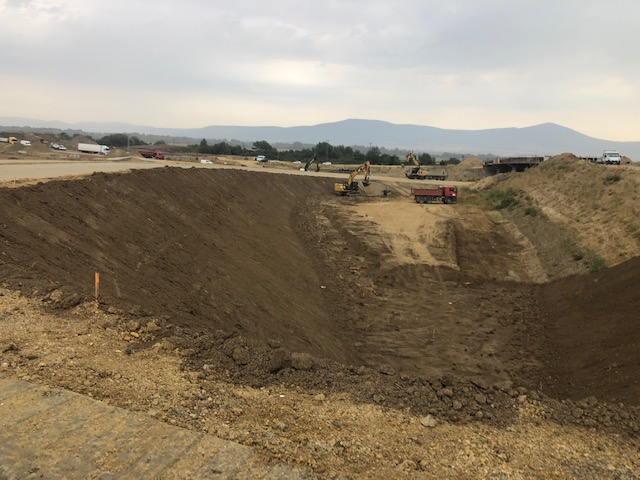
Helyszín: Novajidrány–Garadna szakasz. Megbízó: Ódút – Duna Aszfalt Kft.
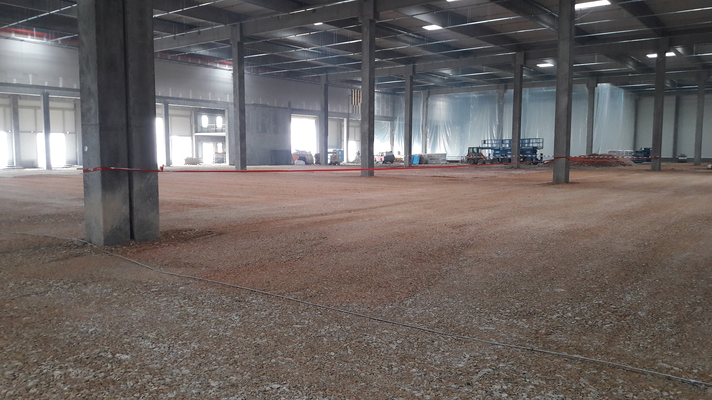
Tiszaújváros, Dózsa György út 2308/15. Megbízó: Aktuál Bau Kft.
Helyszín: Hejőkürt 043/9. Tulajdonos: Lidl Magyarország Bt.
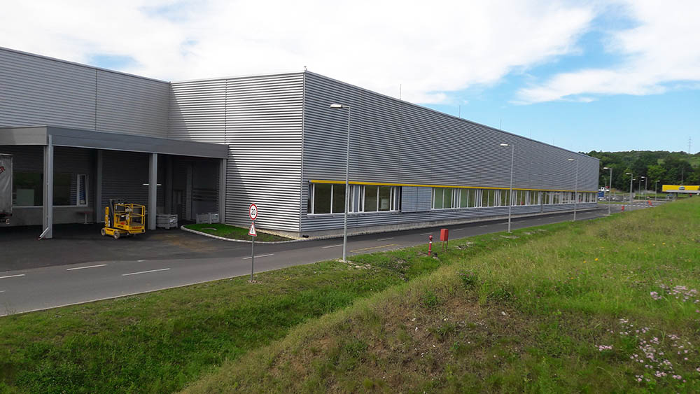
Miskolc, Robert Bosch Park 3. Tulajdonos: Robert Bosch Energy and Bodysystems Kft.
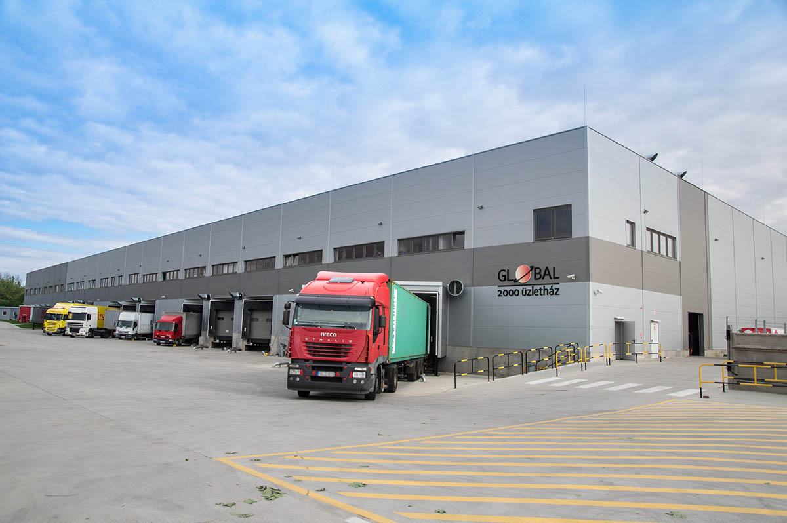
3526 Miskolc, Repülőtéri u. 3. Tulajdonos: Globál 2000 Üzletház Kft.
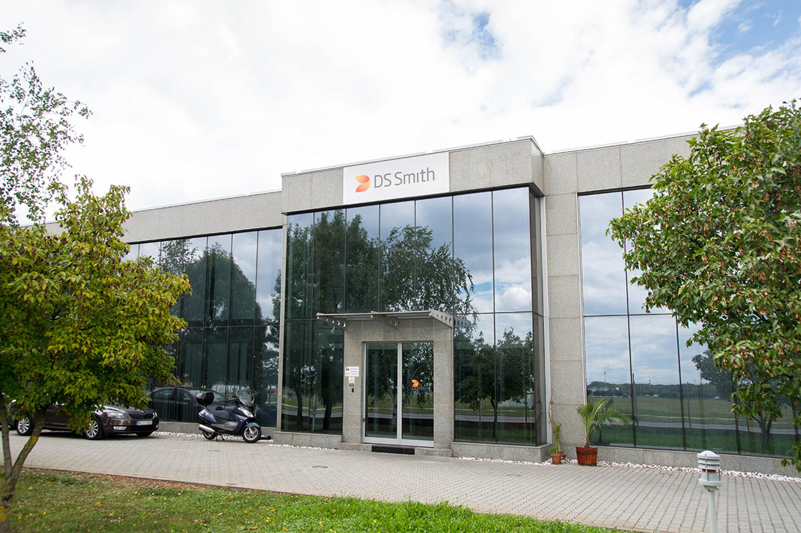
Tiszaújváros, Ipari Park Kándó K. út. Bérlő: DS-Smith Packaging Kft.
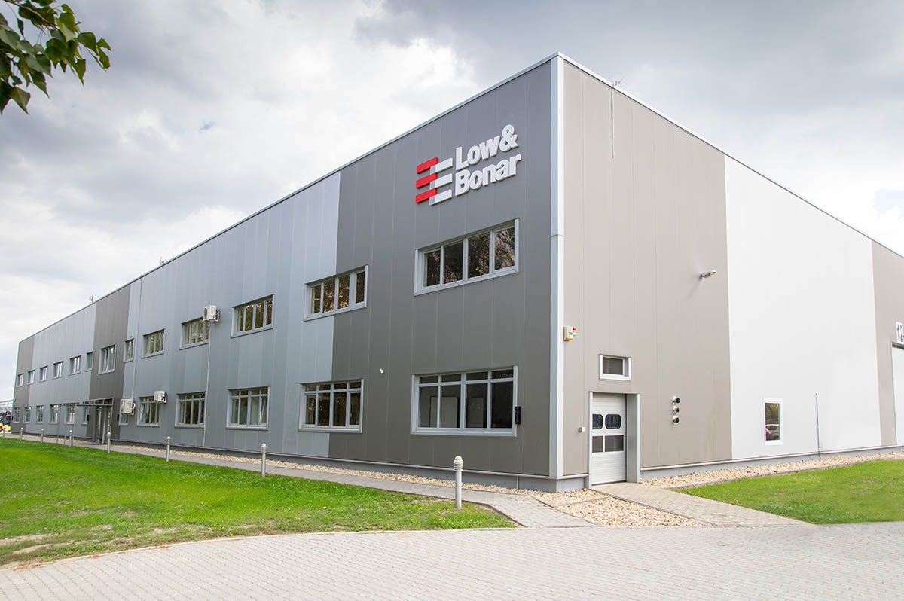
Tiszaújváros, Ipari Park Kandó K. út 2310/1. Tulajdonos: Cordys Holding Zrt. Bérlő: Bonar Geosynthetics Kft.
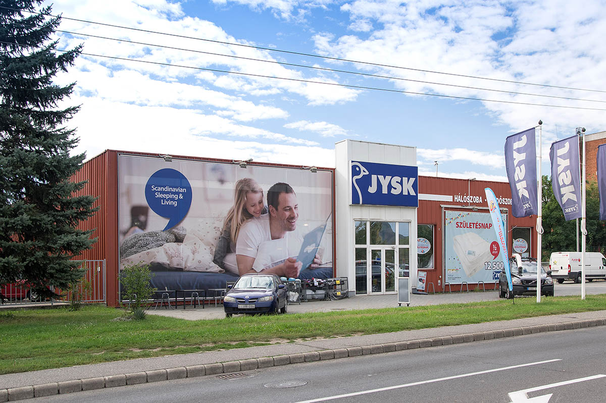
Kazincbarcika, Bercsényi u. 2. Tulajdonos: Cordys Holding Zrt.
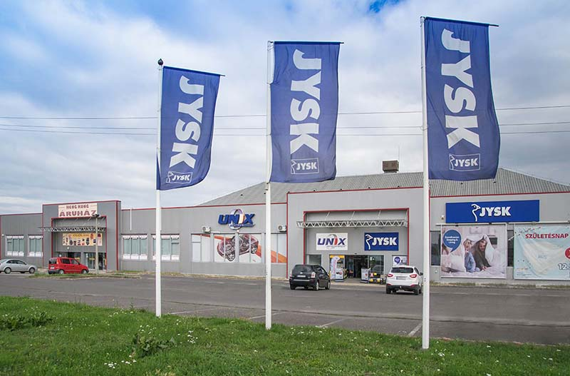
Miskolc, Repülőtéri út 4. Tulajdonos: Cordys Holding Zrt.
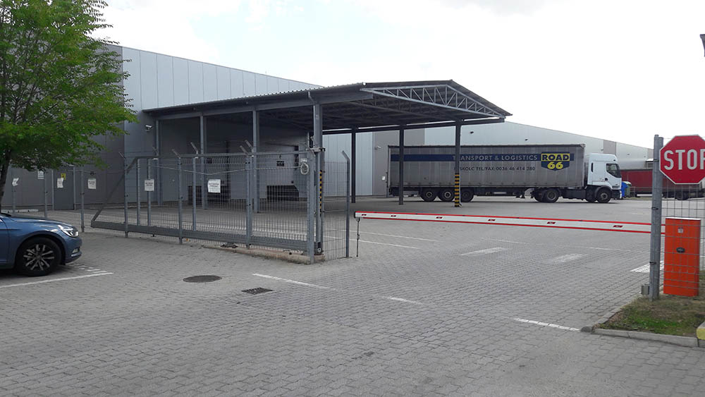
Miskolc, Repülőtéri út 4. Tulajdonos: Cordys Holding Zrt. Bérlő: Robert Bosch Energy and Body System Kft.
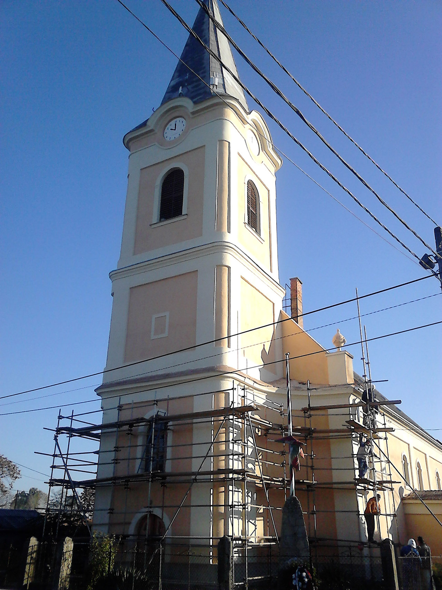
Feladat: teljes körű homlokzat-felújítás. Helyszín: Hejőpapi, Templom út 1.

Feladat: Földmunka, Olefin II Project. Helyszín: Tiszaújváros, TVK Ipari Park.
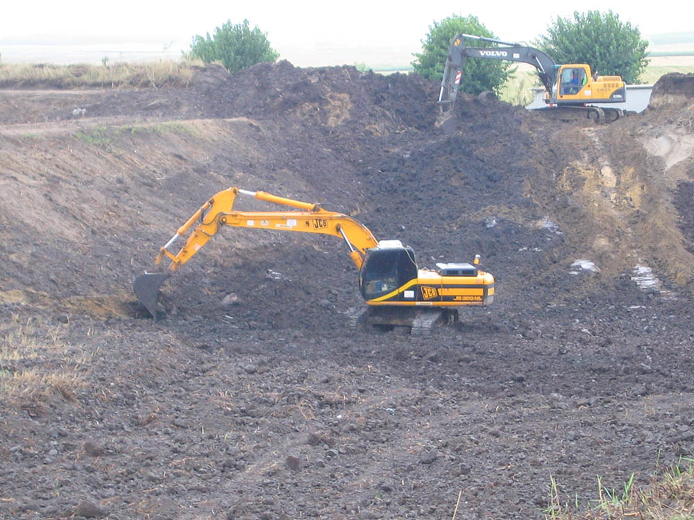
Feladat: Rekultiváció, kármentesítés. Megbízó: Vértesi Környezetgazdálkodási Kft., Tatai Környezetvédelmi Zrt.
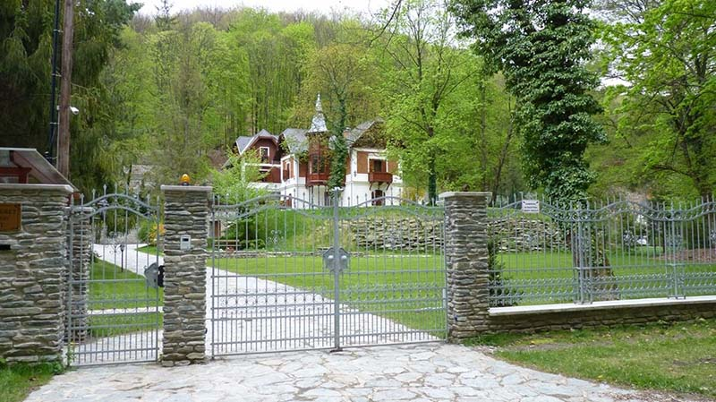
Lillafüred, Erzsébet sétány 71.

Feladat: mezzanine szint építése, irodai layout kialakítása.
Nincs találat a kiválasztott szűrőkre.